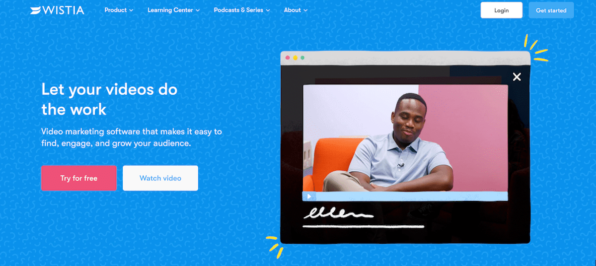
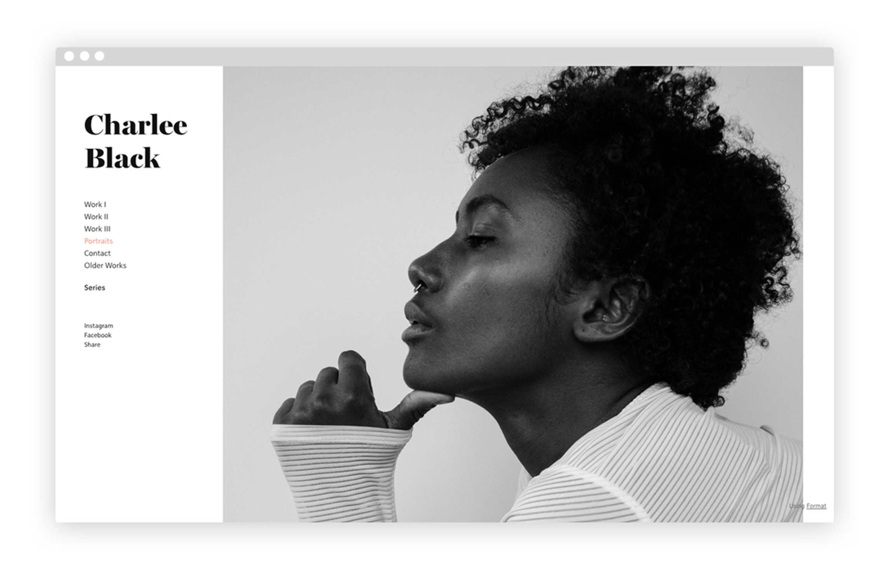
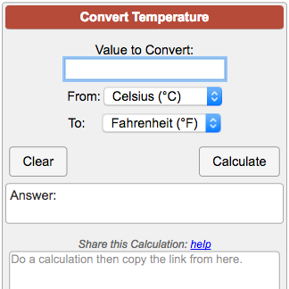

About Me
Hi! I'm Marky Ruther, I’m a passionate web developer who transforms ideas into immersive digital experiences. With a knack for clean code and a sharp eye for design, I thrive on creating websites that balance both functionality and aesthetics. Over the years, I’ve honed my skills in HTML, CSS, JavaScript, and modern frameworks, continually staying ahead of trends to deliver cutting-edge solutions.
Skills
WEB developer
As a web developer, I specialize in creating dynamic and responsive websites that enhance user experience. With expertise in languages like HTML, CSS, and JavaScript, I bring design concepts to life while ensuring optimal functionality. Passionate about staying current with industry trends, I continuously refine my skills to deliver innovative solutions.
Java Programmer
A Java programmer specializes in developing applications using the Java programming language, known for its portability and performance. With expertise in object-oriented programming and frameworks like Spring and Hibernate, they build robust and scalable solutions. Their skills often include working with databases, version control, and understanding software development methodologies.
UI/UX designer
A UI/UX developer specializes in creating intuitive and visually appealing digital experiences. They blend user-centered design principles with technical skills to enhance usability and functionality. Their goal is to ensure that users find products engaging, efficient, and easy to navigate.
Projects
Landing Page
This project demands a foundational understanding of HTML and CSS. You will learn how to add columns, divide sections, arrange items, add headers, footers.
Portfolio
A personal portfolio with the basic skills in CSS and HTML.
Temperature Converter
The user will input a temperature in either Fahrenheit or Celsius and press a "convert" button.
Contact
Let's work together! Contact me here to discuss your next project.